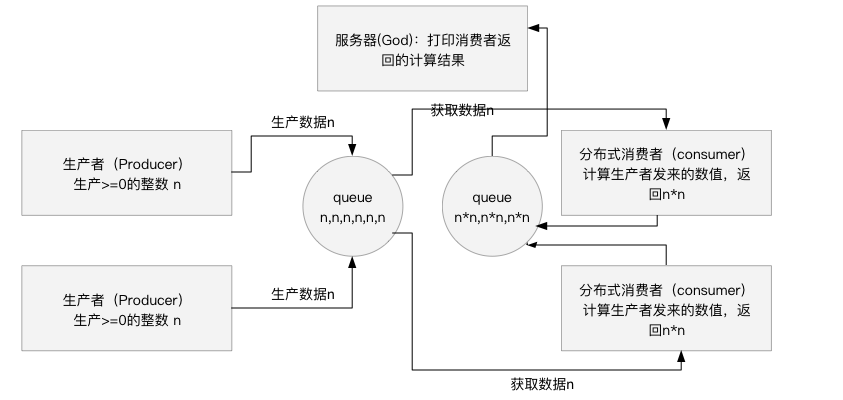
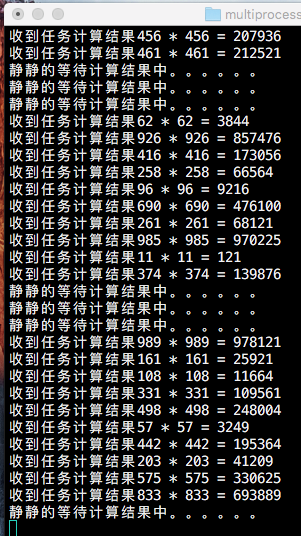
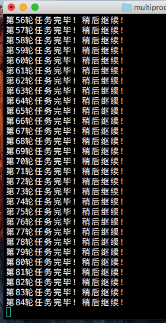
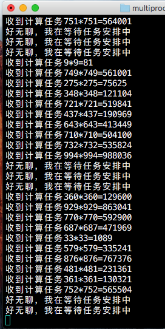

Python并发编程（下）功能强大设置简单的分布式多进程生产者与消费者模式
作者:J.sky 发布时间:2017-10-07 14:09:46 标签: Python基础
 在
在Python的日常生活中，当你要进行一系列超大型密集的计算任务或是超多未知的数据需要采集时，一台机器或许已经无法满足你的需求了，这时就得考虑使用到分布式操作进行任务处理了。
一个无聊而又变态的需求
我们假设有一个无聊而又变态的任务：有一系列的任务会成生一组随机>=0的整数队列[n,n,n,.....n,n]，我们需要立即取得他们的n*n自乘结果。当然你也可以使用单线程进行相关的操作，但是由于计算任务巨大，我们不得采用分布式多进程生产者与消费者模式来进行程序的执行了，好吧，我们先了解一下相关术语。
分布式
在一个分布式系统中，一组独立的计算机展现给用户的是一个统一的整体，就好像是一个系统似的。这种情景下就是分布式。
为什么要用分布式多进程而不是多线程？
由于Python解释器中使用了内部的GIL全局解释器锁，使得Python多线程的并发在任意时刻只允许单个CPU来运行，这样的运行方式会影响程序的并发。所以多线程并不适用于高密度的计算任务，由于计算任务数量庞大，所以采用分布式可以大大提高计算的速度。
关于Python的进程
请点击传送门:Python并发编程（上）进程模块multiprocessing模块和Process类
Managers
管理器提供一种创建可在不同进程之间共享的数据的方法，包括在不同机器上运行的进程之间通过网络共享。管理员对象控制管理共享对象的服务器进程。其他进程可以通过使用代理访问共享对象。这里我们使用multiprocessing.managers.BaseManager来创建一个多进程管理器，对网络的任务进行注册和管理。BaseManager下边封装了很多相关的方法，大大简化了网络上进程之间的通信，可以方便的组建分布式的进程任务。
Queue
Queue实现多生产者，多消费者队列。它特别适用于信息必须在多个线程间安全地交换的多线程程序中。在本次分布式多进程的任务Queue起到了非常重要的作用。
开始编码前
我们先构思一下程序需要的模块：
- 上帝（God也是服务器，服务器负责注册队列queue,并接收并查看到最终结果。）
- 生产者（Producer,负责生产出需要进行计算的数据并发送给消费者。）
- 消费者（Consumer，负责接收生产者发来的数据并进行计算，最后把结果发送给上帝看.）
相关思维导图：如果下 
程序构建要点：
class GodManager(BaseManager):
pass
注册一个管理器，负责注册或获取网上的队列Queue。
服务器上需要创建程序中必需的queue,并注册到网上。
GodManager(address=('192.168.0.88',5678),authkey=b'www.17python.com')
注册服务器，通过start()启动，通过connect()连接。通过manager.pq()类似的方法获取网上的队列。
注意，分布式多进程中一定要获取网上注册的queue，否则会造成数据错乱。
另外，测试时，请在终端中启动程序，网络连接错误的，建议查看一下防火墙是不是禁止了网络的连通，不要在IDE中使用调试来测试本程序。
God源码
import random, time, queue
from multiprocessing.managers import BaseManager
# 创建任务需要的两个队列
pq = queue.Queue()
cq = queue.Queue()
# 注册一个管理器，注册Queue队列到网，供其它终端使用。
class GodManager(BaseManager):
pass
#把任务队列通过管理器注册到网上，这样就可以在多台机器间访问通信，做到分布式通信。
GodManager.register('pq',callable=lambda:pq)
GodManager.register('cq',callable=lambda:cq)
#设置服务器的ip、端口及密码
manager = GodManager(address=('192.168.0.88',5678),authkey=b'www.17python.com')
manager.start()#启动服务器
print('服务器已经启动！')
#重新获取已经在网上注册的队列,使用队列名()方法来获得网上注册的队列名。
p_q = manager.pq()
c_q = manager.cq()
while True:
if c_q.empty():#如果结果集队列空
time.sleep(1)
print("静静的等待计算结果中。。。。。。")
else:
r = c_q.get()#获得传来的计算结果
print("收到任务计算结果%s" % r)
Producer 生产者
import random, time
from multiprocessing.managers import BaseManager
# 注册一个管理器，负责管理调度网上注册的Queue队列
class ProducerMagager(BaseManager):
pass
#获取网络上的Queue 生产者，只关心生产需要计算的数据即可。
ProducerMagager.register('pq')
# 注册生产者服务器，address 真写IP及端口，authkey是一个密码，如果需要访问此处必须与服务器一致。
pm = ProducerMagager(address=('192.168.0.88',5678), authkey=b'www.17python.com')
pm.connect()#连接服务器
print('生产者服务器已经准备就绪！')
task = pm.pq()#获取生产者的队列
k = 1
#
while True:
for i in range(10):
r = random.randint(0,999)
task.put(r)
print("第{0}轮任务完毕！稍后继续！".format(k))
k += 1
time.sleep(3)
Consumer 消费者
import time
from multiprocessing.managers import BaseManager
# 注册一个管理器，负责管理调度网上注册的Queue队列
class ConsumerMagager(BaseManager):
pass
#获取网络上的Queue 消费者，需要获取任务，计算后发送任务。
ConsumerMagager.register('pq')
ConsumerMagager.register('cq')
m = ConsumerMagager(address=('192.168.0.88',5678),authkey=b'www.17python.com')
m.connect()#连接服务器
pq = m.pq()
cq = m.cq()
#开始计算任务
while True:
if not pq.empty():#如果任务队列不为空
n = pq.get(timeout=1)#如果超。
print('收到计算任务{0}*{1}={2}'.format(n,n,n*n))
cq.put('%d * %d = %d' %(n,n,n*n))
else:
time.sleep(1)
print("好无聊，我在等待任务安排中")
在终端分别启动python3 God.py python3 producer.py python3 Consumer.py
  
然后就可以观察终端打印的结果，服务器终端显示着计算回来的结果，除了服务器以外，生产者和消费者都可以分布式在各个终端上启动多个进行任务的生成和计算。
我这里只在本机上进行测试了，如果只是在一台机器上进行多进程的计算，可以不必网上注册，使用唯一的Queue进行通信即可。
别小睢这个小小的分布式，稍加修改任务即可变成强大的分布式采集程序，看你怎么用了。
参考文档
本文源码下载：
Python并发编程（上）进程模块multiprocessing模块和Process类
作者:J.sky 发布时间:2017-10-06 09:43:48 标签: Python基础
Python中为什么要用多进程编程？
由于Python解释器中使用了内部的GIL全局解释器锁，使得Python多线程的并发在任意时刻只允许单个CPU来运行，这样的运行方式会影响程序的并发。
当程序是在I/O密集时，CPU可能会有更多的空闲处理多线程的并发，这种情况下一般是没有问题的。如果是大量计算密集型的应用，如果使用多线程来并发，性能会大大降低，这个时候，我们就得考虑使用进程Process来进行编程及通信了。
创建进程Process(方法1)
import time, os
from multiprocessing import Process
def clock(x,y):
for i in range(x):
print('当前时间=={0}'.format(time.ctime()))
time.sleep(y)
if __name__ == '__main__':
p = Process(target=clock,args=(5,1))
p.start()
p.join()
创建进程Process(方法2)
import time, os
from multiprocessing import Process
class ClockProcess(Process):
def __init__(self,x,y):
Process.__init__(self)
self.x=x
self.y=y
def run(self):
for i in range(self.x):
print('{0}=={1}'.format(os.getpid(),time.ctime()))
time.sleep(self.y)
if __name__ == '__main__':
p = ClockProcess(5,1)
p1= ClockProcess(5,1)
p.start()
p1.start()
p.join()
p1.join()
通过Process类创建实例，然后传函数创建进程，另一种是继承Process类，然后重写run()方法创建要执行的任务。
进程池 Pool(方法3)
from multiprocessing import Pool
import os
def clock(k):
for i in range(k):
print('{0}当前时间=={1}'.format(os.getpid(),time.ctime()))
time.sleep(k)
if __name__ == '__main__':
l = [1 for i in range(20)]# 列表推导出一个列表对象
with Pool(5) as p:
p.map(clock,l)
进程池方便创建多进程进行操作，创建使用也是比较简单的，使用时可以根据应用场景对线程的控制要求来选择线程的创建方式。
线程间的通信
Python为线程提供了Queue、Pipes等多种方式来交换数据，我们以Queue为例来演示学习一下进程间的通信及协作，稍后我们还要做分布式多进程的演示。
Queue进程间通信演示：
import multiprocessing as mp
import time, os
from queue import Queue
def prt_q(q):
'''消费者打印数据'''
while True:
v = q.get()
print(v)
time.sleep(0.1)
def wrt_q(q):
'''生产者添加数据'''
for k in ['aa','bb','cc','dd','ee','ff','gg']:
print("{0}已经加入到队列中".format(k))
q.put(k)
time.sleep(0.2)
if __name__ == '__main__':
q = Queue()
wrt_q(q)
p = mp.Process(target=prt_q, args=(q,))
p.start()
p.join()
Queue的使用其实就是生产者与消费者的模式，上边的代码运行后会有死锁，请按ctrl+c强制停止程序运行。
Python的进程有个很强大的地方，就是通过简单的配置就可以进行分布式多进程，这点是很吸引人的，稍后我会有一个篇幅来介绍一下分布式多进程。
本文源码下载：
Python多线程编程（下）多线程锁 threading.Lock
作者:J.sky 发布时间:2017-10-04 14:49:34 标签: Python基础
在多线程任务中，线程对数据的操作是随机的，这个先后次序无法预测，如果利用多线程修改唯一数据，由于对数据操作的随机性，必会影响到数据结果的准确性，所以在多线程的任务的编码中，我们必须使用线程锁。
Python的多线程锁 threading.Lock
通过下边的例子，我们来看看多线程锁的重要性，定义两个数据，同时利用多线程对其+ -相同的数值， 如果操作次序是正常的，一加一减，那个数据应该是没有变化的，但是因为多线程操作没有加锁时对数据的操作是随机争抢资源的， 多线程操作时会发生，多加或是多减的结果，我们看下边的例子：
import threading
data = 0
lock_data = 0
lock = threading.Lock()#创建一把线程锁
lock.acquire()
lock.release()
def change_d(n):
'''修改无锁数据的函数'''
global data
data += n
data -= n
def change_l_d(n):
'''修改有锁数据的函数'''
global lock_data
lock_data += n
lock_data -= n
def myfun(n):
for i in range(500000):
change_d(n)
#lock.acquire()
#change_l_d(n)
#lock.release()
#与下边的with语句处相同
with lock:
change_l_d(n)
def main():
threads = []
k = 5
for i in range(k):
t = threading.Thread(target=myfun, args=(10,))
threads.append(t)
for i in range(k):
threads[i].start()
for i in range(k):
threads[i].join()
print("无锁数据最终结果=={0}".format(data))
print("有锁数据最终结果=={0}".format(lock_data))
if __name__ == '__main__':
main()
多次运行后我们会发现，无锁数据的最终结果会出现不同，因为可以证明，无锁的时候多线程操作是随机性的。所以在多线程操作中，如果存在多线程操作唯一数据时，一定要加锁保证每次只有一个线程对基进行操作。
除了对多唯一数据进行加锁这种方法以外，在Python中还可以使用信号量或是事件对线程进行控制，但笔者认为，还是使用Lock对象比较方便。
本文源码下载：
Python多线程编程（上）多线程创建的几种方法
作者:J.sky 发布时间:2017-10-03 13:01:21 标签: Python基础
Python多线程
在编程的日常中，如果遇到大量相同并且重复的计算任务时，我们考虑使用多线程，多线程可以并发的执行程序中的函数，这样就可以更快的利用CPU计算结果，结省时间成本。
Python中创建线程的方法有很多，可以通过thread threading.Thread或是线程池提供的方法来创建线程,这节我们主要讨论如何创建线程。
单线程时的操作
我们定义一些操作，先用单线顺序操作。
import time
def loop():
print("循环loop1打印时间======",time.ctime())
time.sleep(3)
loop()
loop()
print("loop1打印结束时间======",time.ctime())
程序执行结果：
循环loop1打印时间====== Mon Oct 2 07:59:17 2017
循环loop1打印时间====== Mon Oct 2 07:59:20 2017
loop1打印结束时间====== Mon Oct 2 07:59:23 2017
顺序执行程序后，共花掉6秒时间，如果我们可以并发执行这个打印，或许我们能节约一些时间。
thread
thread提供了一些线程创建与操作的方法，但官方文档及各类参考书中均有提到，_thread是一个比较低级的线程操作模块不建使用，这里我们也只是带过。
import _thread
from utils import tn # 导入工具类中计算程序执行时间的函数
def loop():
print("循环loop1打印时间======",time.ctime())
time.sleep(3)
@tn
def main():
_thread.start_new_thread(loop, ())
_thread.start_new_thread(loop, ())
time.sleep(3)
print("如果上边没有sleep()，程序会没有运行完打印直接退出")
if __name__ == '__main__':
main()
程序执行结果：
循环loop1打印时间====== Mon Oct 2 14:24:49 2017
循环loop1打印时间====== Mon Oct 2 14:24:49 2017
如果上边没有sleep()，程序会没有运行完打印直接退出
程序运行时间:3.01ms
这次程序的运行我节省了3秒钟的宝贵时间！但也发现了thread模块的一些缺点，比如主线程结束时不会等待其它线程，这将导致程序没有打印结果直接退出了，这是我们不想看到的。
所以，由于thread模块的功能缺陷，通常不推荐使用thread,我们将继续讨论更高级的线程模块threading和其它线程相关模块。
threading模块 Thread类
创建一个Thread实例，其中target这个参数可以接受一个函数.
我们先来试试，代码如下：
import time
import threading
from utils import tn # 导入工具类中计算程序执行时间的函数
def loop1(tname):
print(tname+"循环loop1打印时间======" + time.ctime())
time.sleep(2)
@tn
def main():
print('程序开始执行，耐心等待几秒。')
threads = []#定义一个线程队列
for i in range(5):
t = threading.Thread(target=loop1, args=("thread"+str(i),))
threads.append(t)
for i in range(5):
threads[i].start()
for i in range(5):
threads[i].join()
if __name__ == '__main__':
main()
通过继承Thread类派生子类并创建线程的对象，是创建线程的另一种方法：
import time
import threading
from utils import tn # 导入工具类中计算程序执行时间的函数
class MyThread(threading.Thread):
def __init__(self, func, name=''):
threading.Thread.__init__(self) # 这里必须添加父类的构器方法
self.func = func
self.name = name
#此方法必须实现
def run(self):
self.func(self.name)
def loop1(tname):
print(tname+"循环loop1打印时间======" + time.ctime())
time.sleep(2)
@tn
def main():
print('程序开始执行，耐心等待几秒。')
threads = [] #定义一个线程队列
for i in range(5):
t = MyThread(loop1, "thread"+str(i))
threads.append(t)
for i in range(5):
threads[i].start()
for i in range(5):
threads[i].join()
if __name__ == '__main__':
main()
注意：run()此方法必须实现;threading.Thread.__init__(self) 必须添加父类的构器方法
二种方法相比较起来，通过继承Thread类来创建线程的实例更直观灵活一些，通过以上例子的对比来看，多线程并发执行程序要比单线程执行节约很多时间。
关于多线程实例的创建还有其它方法，比如Thread构建方法中target参数也可以传入一个实例，不过个人感觉没有继承Thread类创建的实例更直观些，这里也就不举例了，
另外还可以通过线程池创建一组线程用来执行任务。
threadpool Python线程池
Python3下载安装模块
pip3 install threadpool
用线程池测试一下刚才的打印，代码如下：
import time
import threadpool
from utils import tn # 导入工具类中计算程序执行时间的函数
def loop1(tname):
print(tname+"循环loop1打印时间======" + time.ctime())
time.sleep(2)
@tn
def main():
l = ['11111','22222','33333','44444','55555']
pool = threadpool.ThreadPool(5)# 创建一个线程池
requests = threadpool.makeRequests(loop1, l) #传入函数 及函数需要的参数
[pool.putRequest(req) for req in requests]# 不理角这段代码，猜测是循环创建线程 分配任务。
pool.wait()#设置池内所有线程等待。
if __name__ == '__main__':
main()
Python线程的创建方法应该还有很多种，这里就不在介绍了，博主感觉继承Thread类创建实例的方法比较经典可行，代码直观，其次是创建Thread对象传参进去也是简单到家了。
有关Python线程的创建就先聊到这里，稍后再研究一下线程锁，这几天正值国庆节，祝大家玩的开心！
本文源码下载：
python 类的静态方法和类方法
作者:J.sky 发布时间:2017-09-30 09:31:31 标签: Python基础
静态方法和类方法的定义
Python中类的静态方法使用@staticmethod装饰器来定义
Python中类方法使用@classmethod装饰器来定义
class Hello:
k = 2
#定义一个类的静态方法
@staticmethod
def add(x,y):
return x + y
#定义一个类方法
@classmethod
def mul(cls,x):
return cls.k * x
print(Hello.add(999,1))#使用静态方法 结果为1000
print(Hello.mul(2))#使用类方法 结果为4
类的静态方法使用和使用普通函数一样简单，但类方法确有些不同，她只能用于类本身，把自身做为对象进行操作。
我们继承一下Hello这个类，看看静态方法和类方法是不是能被继承？
class World(Hello):
k = 4
print(World.add(1,999))
print(World.mul(2))
通过上边的例子，我们可以发现子类可以继承使用父类方法和父类的静态方法，如果类变量值有所变化，结果也会有所不同。